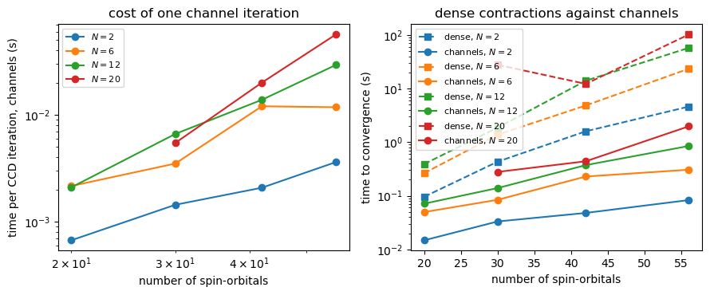
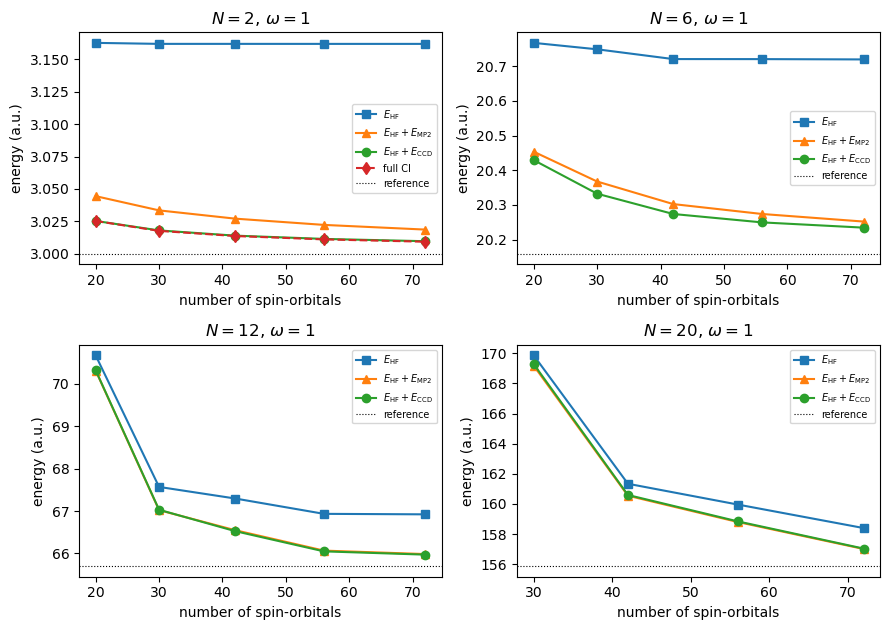
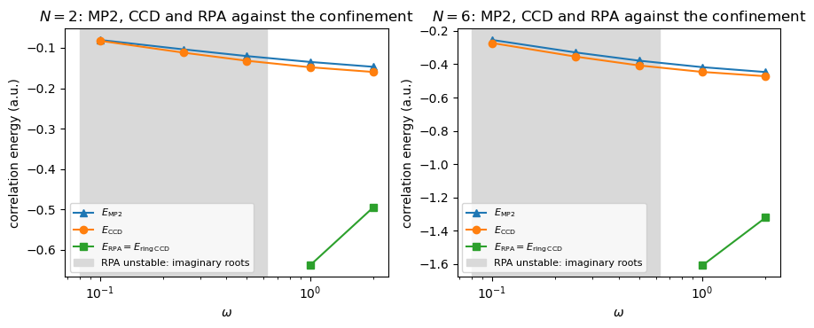

Project 4: coupled-cluster doubles for quantum dots, three ways#
Companion notebook to Appendix A, Project 4, of Quantum mechanics for
many-particle systems. The code is the same as in
BookManybody/BookPrograms/appendixA/ccdchannels.py, which builds on
quantumdot.py of chapter 11 (the oscillator basis and the Coulomb matrix
elements) and on coupledcluster.py of chapter 10 (the dense
coupled-cluster solver); the notebook runs it section by section.
The system is the two-dimensional quantum dot of chapter 11,
for the closed shells \(N=2,6,12\) and \(20\), and the task of the project is to write a CCD code – first as the equations stand, then as matrix-matrix multiplications in channels of conserved quantum numbers – and to benchmark it: against the dense solver of chapter 10, against the two-electron full CI of chapter 5, and against the random-phase approximation of chapter 7, which turns out to be a piece of CCD.
import sys, os, glob, time
import numpy as np
import matplotlib.pyplot as plt
for _pattern in ("chapter*", "appendix*"):
for _d in sorted(glob.glob(os.path.join("..", "BookManybody",
"BookPrograms", _pattern))):
if _d not in sys.path:
sys.path.insert(0, _d)
import ccdchannels as cc
from quantumdot import QuantumDot, matrices
from coupledcluster import ccd as ccd_dense, reference_energy, mp2_energy
np.set_printoptions(precision=6, suppress=True, linewidth=120)
1. The basis, the magic numbers and the Hartree-Fock reference#
The single-particle states are the two-dimensional oscillator functions
labelled by \((n,m,m_s)\) with energy \(\varepsilon=\omega(2n+|m|+1)\); the
shell \(N_s=2n+|m|\) holds \(2(N_s+1)\) electrons, and the closed shells are
\(N=2,6,12,20,30,\ldots\) quantumdot.py supplies the antisymmetrised
Coulomb elements \(\langle pq|\hat v|rs\rangle_{\rm AS}\), which vanish
unless \(m_p+m_q=m_r+m_s\) and \(m_{s_p}+m_{s_q}=m_{s_r}+m_{s_s}\).
The Hartree-Fock equations of chapter 6 are solved with the Fock matrix diagonalised block by block in \((m,m_s)\), so that every orbital keeps its quantum numbers; the reference energy \(E_{\rm ref}=\sum_i\langle i|\hat h|i\rangle+\frac12\sum_{ij}\langle ij|\hat v|ij\rangle_{\rm AS}\) evaluated with the transformed matrix elements must reproduce the Hartree-Fock energy, and the occupied-virtual block of the Fock matrix must vanish (Brillouin’s theorem). That is the first test of a transformed set of matrix elements, and every CCD code should pass it before anything else is tried.
dot = QuantumDot(2, shells=5)
print("magic numbers:", dot.magic_numbers())
for N in (2, 6, 12, 20):
dot = QuantumDot(N, shells=5)
h, v = matrices(5)
h_hf, v_hf, eps, labels, C, it = cc.hartree_fock_blocks(dot, h, v, N)
f = np.diag(eps)
F = h_hf + np.einsum("piqi->pq", v_hf[:, :N, :, :N])
print(f"N = {N:2d}: E_0 = {np.sum(dot.energies()[:N]):8.4f}, E_ref(osc.) = {reference_energy(h, v, N):12.8f}, "
f"E_HF = {reference_energy(h_hf, v_hf, N):12.8f} ({it} iterations), "
f"max |f_ai| = {np.abs(F[N:, :N]).max():.1e}, max |f_pq - eps| = {np.abs(F - f).max():.1e}")
magic numbers: [2, 6, 12, 20, 30, 42]
N = 2: E_0 = 2.0000, E_ref(osc.) = 3.25331414, E_HF = 3.16192140 (15 iterations), max |f_ai| = 1.2e-15, max |f_pq - eps| = 4.4e-15
N = 6: E_0 = 10.0000, E_ref(osc.) = 22.21981284, E_HF = 20.72025707 (24 iterations), max |f_ai| = 2.4e-15, max |f_pq - eps| = 1.4e-14
N = 12: E_0 = 28.0000, E_ref(osc.) = 73.76554905, E_HF = 67.29686927 (30 iterations), max |f_ai| = 3.8e-15, max |f_pq - eps| = 2.0e-14
N = 20: E_0 = 60.0000, E_ref(osc.) = 177.96329742, E_HF = 161.33972067 (25 iterations), max |f_ai| = 4.9e-15, max |f_pq - eps| = 1.6e-14
2. The CCD equations as they stand#
With \(\hat T\approx\hat T_2=\frac14\sum t_{ij}^{ab}a^\dagger_aa^\dagger_ba_ja_i\) the energy is \(E_{\rm CCD}=E_{\rm ref}+\frac14\sum_{ijab}\langle ij|\hat v|ab\rangle t_{ij}^{ab}\) and the amplitudes solve, for all \(i>j\), \(a>b\),
with antisymmetrised matrix elements throughout. The function
ccd_naive encodes this literally, one Python loop per index, and
iterates \(t\leftarrow-(\text{everything else})/(\varepsilon_a+\varepsilon_b-\varepsilon_i-\varepsilon_j)\)
from the MP2 guess. It is correct, and it is hopeless: the quadratic
terms cost \(n_h^4n_p^4\) operations per iteration.
for shells in (1, 2):
dot = QuantumDot(2, shells)
h, v = matrices(shells)
h_hf, v_hf, eps, labels, C, it = cc.hartree_fock_blocks(dot, h, v, 2)
f = np.diag(eps)
t0 = time.time(); naive = cc.ccd_naive(eps, v_hf, 2); t_naive = time.time() - t0
t0 = time.time(); dense = ccd_dense(f, v_hf, 2); t_dense = time.time() - t0
exact = cc.two_electron_spectrum(h, v)[0]
E_hf = reference_energy(h_hf, v_hf, 2)
print(f"shells 0-{shells}, {h.shape[0]} spin-orbitals: E_HF = {E_hf:.8f}")
print(f" naive loops : E_corr = {naive['energy']:.12f} {t_naive:7.2f} s for {naive['iterations']} iterations")
print(f" dense einsum: E_corr = {dense['energy']:.12f} {t_dense:7.3f} s")
print(f" two-electron FCI: {exact:.8f}; E_HF + E_CCD = {E_hf + naive['energy']:.8f}")
shells 0-1, 6 spin-orbitals: E_HF = 3.25331414
naive loops : E_corr = -0.100986130200 0.27 s for 14 iterations
dense einsum: E_corr = -0.100986130218 0.002 s
two-electron FCI: 3.15232801; E_HF + E_CCD = 3.15232801
shells 0-2, 12 spin-orbitals: E_HF = 3.16269135
naive loops : E_corr = -0.123643528496 6.28 s for 18 iterations
dense einsum: E_corr = -0.123643528517 0.010 s
two-electron FCI: 3.03860458; E_HF + E_CCD = 3.03904782
For six spin-orbitals CCD is exact for two electrons: there are no triples or quadruples, and the singles are absent only because the CCD amplitudes happen to make them so in this tiny space. Already for twelve orbitals CCD misses the FCI energy by \(4\times10^{-4}\), the singles contribution discussed in chapter 11.
3. Channels#
A two-particle configuration \((p,q)\) carries the conserved quantum numbers \(M=m_p+m_q\) and \(S=m_{s_p}+m_{s_q}\), and the interaction cannot change them. Sorting the pairs \(a<b\) and \(i<j\) by \((M,S)\) turns every matrix in the ladder terms into a block-diagonal one, and the contractions into small matrix products:
The ring terms couple a particle to a hole instead. Re-sorting the amplitudes as \(\tilde t_{(ai),(ck)}=t_{ik}^{ac}\), a particle-hole pair \((a,i)\) carries \((m_a-m_i,\,m_{s_a}-m_{s_i})\), and
again block by block. The two remaining quadratic terms are products with
the one-body intermediates \(F_{li}=\frac12\sum_{kcd}\langle kl|\hat v|cd\rangle t_{ik}^{cd}\)
and \(G_{ad}=\frac12\sum_{klc}\langle kl|\hat v|cd\rangle t_{kl}^{ac}\) – the
\(F_{mi}\) and \(F_{ae}\) of the Stanton-Gauss-Watts-Bartlett intermediates in
chapter 10. The class ChannelCCD does exactly this, and agrees with the
dense solver of chapter 10 to machine precision.
results = {}
print(f"{'N':>3s} {'norb':>5s} {'E_HF':>13s} {'E_MP2':>12s} {'E_CCD':>12s} {'|dense - channels|':>18s} "
f"{'t_channels':>10s} {'t_dense':>8s} {'channels':>9s} {'largest block':>14s}")
for N in (2, 6, 12, 20):
r = cc.run(N, shells=5)
results[N] = r
sizes = sorted(r["channels"].block_sizes.values(), key=lambda s: s[0] * s[1], reverse=True)
print(f"{N:3d} {r['n_orbitals']:5d} {r['E_HF']:13.8f} {r['E_MP2']:12.8f} {r['E_CCD']:12.8f} "
f"{abs(r['E_CCD'] - r['E_CCD_dense']):18.1e} {r['t_channels']:10.2f} {r['t_dense']:8.2f} "
f"{len(sizes):9d} {str(sizes[0]):>14s}")
N norb E_HF E_MP2 E_CCD |dense - channels| t_channels t_dense channels largest block
2 42 3.16192140 -0.13488329 -0.14799908 5.6e-17 0.04 1.52 1 (42, 1)
6 42 20.72025707 -0.41769581 -0.44624450 0.0e+00 0.13 4.70 11 (32, 3)
12 42 67.29686927 -0.74795401 -0.77019290 0.0e+00 0.38 13.67 23 (23, 8)
20 42 161.33972067 -0.79449291 -0.74521361 1.1e-16 0.46 12.58 35 (11, 16)
The channel code is faster by a large factor because it never touches the zeros: with \(42\) spin-orbitals the dense \(\langle pq|\hat v|rs\rangle_{\rm AS}\) has \(42^4\approx3\times10^6\) entries of which only a few per cent are non-zero, and the pair blocks are at most a few tens of rows. The price is bookkeeping, and the reward, beyond speed, is that the ladder and ring structure of the equations is now visible in the code.
Cost against basis size#
timings = {N: [] for N in (2, 6, 12, 20)}
for shells in (3, 4, 5, 6):
for N in (2, 6, 12, 20):
if N >= QuantumDot(N, shells).n_orbitals: # no empty orbitals: nothing to correlate
continue
r = cc.run(N, shells)
timings[N].append((r["n_orbitals"], r["t_channels"] / r["ccd_iterations"],
r["t_dense"], r["E_HF"] + r["E_CCD"], r["E_MP2"], r["E_rCCD"], r["E_RPA"], r["rpa_imag"],
r["t_channels"]))
print(f"shells 0-{shells}, N = {N:2d}: {r['n_orbitals']:3d} orbitals, "
f"E_HF + E_CCD = {r['E_HF'] + r['E_CCD']:12.8f}, "
f"channels {r['t_channels']:6.2f} s ({r['ccd_iterations']} it.), dense {r['t_dense']:6.2f} s")
fig, axes = plt.subplots(1, 2, figsize=(9.0, 3.8))
for N, rows in timings.items():
rows = np.array(rows)
axes[0].loglog(rows[:, 0], rows[:, 1], "o-", label=f"$N={N}$")
axes[0].set_xlabel("number of spin-orbitals")
axes[0].set_ylabel("time per CCD iteration, channels (s)")
axes[0].set_title("cost of one channel iteration")
axes[0].legend(fontsize=8)
for N, rows in timings.items():
rows = np.array(rows)
axes[1].semilogy(rows[:, 0], rows[:, 2], "s--", color=f"C{[2, 6, 12, 20].index(N)}", label=f"dense, $N={N}$")
axes[1].semilogy(rows[:, 0], rows[:, 8], "o-", color=f"C{[2, 6, 12, 20].index(N)}", label=f"channels, $N={N}$")
axes[1].set_xlabel("number of spin-orbitals")
axes[1].set_ylabel("time to convergence (s)")
axes[1].set_title("dense contractions against channels")
axes[1].legend(fontsize=8)
plt.tight_layout()
plt.show()
shells 0-3, N = 2: 20 orbitals, E_HF + E_CCD = 3.02527309, channels 0.01 s (22 it.), dense 0.10 s
shells 0-3, N = 6: 20 orbitals, E_HF + E_CCD = 20.42926433, channels 0.05 s (23 it.), dense 0.26 s
shells 0-3, N = 12: 20 orbitals, E_HF + E_CCD = 70.32424919, channels 0.07 s (34 it.), dense 0.39 s
shells 0-4, N = 2: 30 orbitals, E_HF + E_CCD = 3.01794371, channels 0.03 s (23 it.), dense 0.43 s
shells 0-4, N = 6: 30 orbitals, E_HF + E_CCD = 20.33245307, channels 0.08 s (24 it.), dense 1.38 s
shells 0-4, N = 12: 30 orbitals, E_HF + E_CCD = 67.03109602, channels 0.14 s (21 it.), dense 1.87 s
/Users/mhjensen/Teaching/ManyBodyPhysicsUiO/doc/LectureNotes/../BookManybody/BookPrograms/chapter10/coupledcluster.py:258: RuntimeWarning: invalid value encountered in subtract
r2 = r2 + term - term.transpose(0, 1, 3, 2)
/Users/mhjensen/Teaching/ManyBodyPhysicsUiO/doc/LectureNotes/../BookManybody/BookPrograms/chapter10/coupledcluster.py:261: RuntimeWarning: invalid value encountered in subtract
r2 = r2 - term + term.transpose(1, 0, 2, 3)
/Users/mhjensen/Teaching/ManyBodyPhysicsUiO/doc/LectureNotes/../BookManybody/BookPrograms/chapter10/coupledcluster.py:261: RuntimeWarning: invalid value encountered in add
r2 = r2 - term + term.transpose(1, 0, 2, 3)
/Users/mhjensen/Teaching/ManyBodyPhysicsUiO/doc/LectureNotes/../BookManybody/BookPrograms/chapter10/coupledcluster.py:263: RuntimeWarning: invalid value encountered in add
r2 = r2 + 0.5 * np.einsum("mnab,mnij->ijab", ta, W_mnij)
/Users/mhjensen/Teaching/ManyBodyPhysicsUiO/doc/LectureNotes/../BookManybody/BookPrograms/chapter10/coupledcluster.py:264: RuntimeWarning: invalid value encountered in add
r2 = r2 + 0.5 * np.einsum("ijef,abef->ijab", ta, W_abef)
/Users/mhjensen/Teaching/ManyBodyPhysicsUiO/doc/LectureNotes/../BookManybody/BookPrograms/chapter10/coupledcluster.py:268: RuntimeWarning: invalid value encountered in add
r2 = (r2 + term - term.transpose(1, 0, 2, 3)
shells 0-4, N = 20: 30 orbitals, E_HF + E_CCD = 169.28387871, channels 0.28 s (51 it.), dense 27.73 s
shells 0-5, N = 2: 42 orbitals, E_HF + E_CCD = 3.01392232, channels 0.05 s (23 it.), dense 1.60 s
shells 0-5, N = 6: 42 orbitals, E_HF + E_CCD = 20.27401257, channels 0.23 s (19 it.), dense 4.85 s
shells 0-5, N = 12: 42 orbitals, E_HF + E_CCD = 66.52667637, channels 0.37 s (27 it.), dense 14.05 s
shells 0-5, N = 20: 42 orbitals, E_HF + E_CCD = 160.59450705, channels 0.44 s (22 it.), dense 12.23 s
shells 0-6, N = 2: 56 orbitals, E_HF + E_CCD = 3.01140528, channels 0.08 s (23 it.), dense 4.61 s
shells 0-6, N = 6: 56 orbitals, E_HF + E_CCD = 20.24984786, channels 0.31 s (26 it.), dense 23.45 s
shells 0-6, N = 12: 56 orbitals, E_HF + E_CCD = 66.04956381, channels 0.85 s (29 it.), dense 57.61 s
shells 0-6, N = 20: 56 orbitals, E_HF + E_CCD = 158.84111858, channels 1.98 s (35 it.), dense 102.27 s

4. Convergence with the basis and the reference values#
For two electrons at \(\omega=1\) the exact energy is Taut’s \(E=3\) (chapter 11), and the full CI in each basis is the exact answer in that basis; for \(N=6\), \(12\) and \(20\) the reference values are the diffusion Monte Carlo energies of Pedersen et al., \(20.1597(2)\), \(65.700(1)\) and \(155.868(1)\). We follow \(E_{\rm HF}+E_{\rm CCD}\) as the basis grows.
reference = {2: 3.0, 6: 20.1597, 12: 65.700, 20: 155.868}
conv = {N: [] for N in (2, 6, 12, 20)}
for shells in (3, 4, 5, 6, 7):
h, v = matrices(shells)
for N in (2, 6, 12, 20):
if N >= h.shape[0]:
continue
r = cc.run(N, shells, dense=False)
fci = cc.two_electron_spectrum(h, v)[0] if N == 2 else np.nan
conv[N].append((shells, r["n_orbitals"], r["E_HF"], r["E_HF"] + r["E_MP2"], r["E_HF"] + r["E_CCD"], fci))
print(f"shells 0-{shells} done ({h.shape[0]} orbitals)")
fig, axes = plt.subplots(2, 2, figsize=(9.0, 6.4))
for ax, N in zip(axes.flat, (2, 6, 12, 20)):
rows = np.array(conv[N])
ax.plot(rows[:, 1], rows[:, 2], "s-", label=r"$E_{\rm HF}$")
ax.plot(rows[:, 1], rows[:, 3], "^-", label=r"$E_{\rm HF}+E_{\rm MP2}$")
ax.plot(rows[:, 1], rows[:, 4], "o-", label=r"$E_{\rm HF}+E_{\rm CCD}$")
if N == 2:
ax.plot(rows[:, 1], rows[:, 5], "d--", label="full CI")
ax.axhline(reference[N], color="k", lw=0.8, ls=":", label="reference")
ax.set_xlabel("number of spin-orbitals")
ax.set_ylabel("energy (a.u.)")
ax.set_title(f"$N={N}$, $\\omega=1$")
ax.legend(fontsize=7)
plt.tight_layout()
plt.show()
for N in (2, 6, 12, 20):
rows = conv[N]
print(f"N = {N:2d}: " + ", ".join(f"{int(s)} shells: {e:.5f}" for s, n, ehf, emp2, e, fci in rows)
+ f" (reference {reference[N]})")
shells 0-3 done (20 orbitals)
shells 0-4 done (30 orbitals)
shells 0-5 done (42 orbitals)
shells 0-6 done (56 orbitals)
shells 0-7 done (72 orbitals)

N = 2: 3 shells: 3.02527, 4 shells: 3.01794, 5 shells: 3.01392, 6 shells: 3.01141, 7 shells: 3.00962 (reference 3.0)
N = 6: 3 shells: 20.42926, 4 shells: 20.33245, 5 shells: 20.27401, 6 shells: 20.24985, 7 shells: 20.23470 (reference 20.1597)
N = 12: 3 shells: 70.32425, 4 shells: 67.03110, 5 shells: 66.52668, 6 shells: 66.04956, 7 shells: 65.97216 (reference 65.7)
N = 20: 4 shells: 169.28388, 5 shells: 160.59451, 6 shells: 158.84112, 7 shells: 157.03833 (reference 155.868)
The convergence in the number of oscillator shells is slow, as it must be for a Coulomb cusp expanded in smooth functions (chapter 11 discusses the \(1/N_s\) tail), and CCD in a finite basis approaches its own complete-basis limit, not the exact energy: the singles and the triples are missing. For \(N=2\) the difference between CCD and full CI in the same basis is that of the singles alone.
5. Rings, ladders and the random-phase approximation#
Chapter 7 ended with the remark that the RPA ground state is an exponential of two-body operators, \(|{\rm RPA}\rangle\propto \exp\{\frac12\sum Z_{mi,nj}a^\dagger_ma_ia^\dagger_na_j\}|{\rm HF}\rangle\) with \(\mathbf Z=\mathbf Y^*(\mathbf X^*)^{-1}\) – a doubles theory in disguise. Here is the precise statement. Keep in the CCD equations only the driver, the linear ring and the quadratic ring, and write the amplitudes as a matrix over particle-hole pairs, \(T_{(ai),(bj)}=t_{ij}^{ab}\). The equations become the Riccati equation
with the \(\mathbf A\) and \(\mathbf B\) of chapter 7, and the energy
\(E=\frac12{\rm Tr}(\mathbf B\mathbf T)\). If \((\mathbf X,\mathbf Y)\) are the
positive-frequency RPA eigenvectors, \(\mathbf T=\mathbf Y\mathbf X^{-1}\)
solves the Riccati equation and
\(\frac12{\rm Tr}(\mathbf B\mathbf T)=\frac12\big(\sum_\nu\omega_\nu-{\rm Tr}\mathbf A\big)\),
the RPA correlation energy of chapter 7 (Scuseria, Henderson and Sorensen,
2008). ring_ccd iterates the Riccati equation exactly as the CCD
equations are iterated and reproduces the RPA result from the
eigenvalues.
print(f"{'N':>3s} {'E_MP2':>12s} {'E_CCD':>12s} {'E_ring-CCD':>12s} {'E_RPA':>12s} {'Riccati':>9s} "
f"{'min eig(A-B)':>13s} {'imag.':>6s}")
for N in (2, 6, 12, 20):
r = results[N]
print(f"{N:3d} {r['E_MP2']:12.8f} {r['E_CCD']:12.8f} {r['E_rCCD']:12.8f} {r['E_RPA']:12.8f} "
f"{r['riccati']:9.1e} {r['stability'][0]:13.4f} {r['rpa_imag']:6d}")
r = results[2]
print()
print("two electrons: lowest TDA roots", np.round(r["omega_tda"], 4))
print(" lowest RPA roots", np.round(r["omega_rpa"], 4))
print(" exact excitations", np.round(r["exact"][1:] - r["exact"][0], 4))
N E_MP2 E_CCD E_ring-CCD E_RPA Riccati min eig(A-B) imag.
2 -0.13488329 -0.14799908 -0.63822630 -0.63822630 2.1e-12 0.1252 0
6 -0.41769581 -0.44624450 -1.60760392 -1.60760392 1.4e-12 0.1022 0
12 -0.74795401 -0.77019290 -2.68578738 -2.68578738 1.5e-12 0.0529 0
20 -0.79449291 -0.74521361 -2.07136088 -2.07136088 5.1e-13 0.7135 0
two electrons: lowest TDA roots [0.4538 0.4538 0.4538 0.4538 0.4538 0.4538]
lowest RPA roots [0.3108 0.3108 0.3108 0.3108 0.3108 0.3108]
exact excitations [0.5838 0.5838 0.5838 0.5838 0.5838]
The identity holds to the precision of the iterations – ring-CCD and the RPA are the same theory – but the number it produces is wrong by a factor of four. The RPA correlation energy of these dots is far too negative, and the lowest RPA excitation lies far below the exact one. The reason is in the last column: the smallest eigenvalue of \(\mathbf A-\mathbf B\) is small, the Hartree-Fock determinant is close to a triplet instability in the sense of chapter 7, and the RPA amplifies the soft particle-hole modes without the ladder terms that hold them in check. In the electron gas of chapter 6 the rings are the whole story at high density; in a finite dot with a few electrons the ladders – the \(pp\) and \(hh\) channels of the code above – carry most of the correlation, and it is the full CCD, rings and ladders together, that lands within a per cent of the exact answer. Comparing the three columns is the most direct way to see which diagrams matter for a given system.
Dependence on the confinement#
omegas = (0.1, 0.25, 0.5, 1.0, 2.0)
scan = {N: [] for N in (2, 6)}
for N in (2, 6):
for hw in omegas:
r = cc.run(N, 5, hw=hw, dense=False)
scan[N].append((hw, r["E_HF"], r["E_MP2"], r["E_CCD"], r["E_RPA"], r["rpa_imag"], r["stability"][0]))
print(f"N = {N}, omega = {hw:5.2f}: E_HF = {r['E_HF']:11.6f}, E_MP2 = {r['E_MP2']:10.6f}, "
f"E_CCD = {r['E_CCD']:10.6f}, E_RPA = {r['E_RPA']:10.6f}, "
f"min eig(A-B) = {r['stability'][0]:8.4f}, imaginary roots {r['rpa_imag']}")
fig, axes = plt.subplots(1, 2, figsize=(9.0, 3.8))
for ax, N in zip(axes, (2, 6)):
rows = np.array(scan[N])
ax.semilogx(rows[:, 0], rows[:, 2], "^-", label=r"$E_{\rm MP2}$")
ax.semilogx(rows[:, 0], rows[:, 3], "o-", label=r"$E_{\rm CCD}$")
ax.semilogx(rows[:, 0], rows[:, 4], "s-", label=r"$E_{\rm RPA}=E_{\rm ring\,CCD}$")
unstable = rows[rows[:, 5] > 0, 0]
if len(unstable):
ax.axvspan(0.8 * unstable.min(), 1.25 * unstable.max(), color="0.85",
label="RPA unstable: imaginary roots")
ax.set_xlabel(r"$\omega$")
ax.set_ylabel("correlation energy (a.u.)")
ax.set_title(f"$N={N}$: MP2, CCD and RPA against the confinement")
ax.legend(fontsize=8)
plt.tight_layout()
plt.show()
N = 2, omega = 0.10: E_HF = 0.525666, E_MP2 = -0.080490, E_CCD = -0.082523, E_RPA = nan, min eig(A-B) = -0.1422, imaginary roots 18
N = 2, omega = 0.25: E_HF = 1.046284, E_MP2 = -0.103809, E_CCD = -0.111910, E_RPA = nan, min eig(A-B) = -0.1602, imaginary roots 12
N = 2, omega = 0.50: E_HF = 1.799748, E_MP2 = -0.120364, E_CCD = -0.131945, E_RPA = nan, min eig(A-B) = -0.1020, imaginary roots 12
N = 2, omega = 1.00: E_HF = 3.161921, E_MP2 = -0.134883, E_CCD = -0.147999, E_RPA = -0.638226, min eig(A-B) = 0.1252, imaginary roots 0
N = 2, omega = 2.00: E_HF = 5.677282, E_MP2 = -0.146932, E_CCD = -0.159731, E_RPA = -0.494711, min eig(A-B) = 0.7378, imaginary roots 0
N = 6, omega = 0.10: E_HF = 3.870617, E_MP2 = -0.254280, E_CCD = -0.272744, E_RPA = nan, min eig(A-B) = -0.1716, imaginary roots 66
N = 6, omega = 0.25: E_HF = 7.391786, E_MP2 = -0.329524, E_CCD = -0.354568, E_RPA = nan, min eig(A-B) = -0.1854, imaginary roots 30
N = 6, omega = 0.50: E_HF = 12.271499, E_MP2 = -0.378620, E_CCD = -0.407402, E_RPA = nan, min eig(A-B) = -0.1241, imaginary roots 24
N = 6, omega = 1.00: E_HF = 20.720257, E_MP2 = -0.417696, E_CCD = -0.446245, E_RPA = -1.607604, min eig(A-B) = 0.1022, imaginary roots 0
N = 6, omega = 2.00: E_HF = 35.672333, E_MP2 = -0.447004, E_CCD = -0.472025, E_RPA = -1.320571, min eig(A-B) = 0.7043, imaginary roots 0

As the trap is opened the electrons have more room to avoid one another, correlation grows relative to the mean field, and the RPA moves towards an instability: the smallest eigenvalue of \(\mathbf A-\mathbf B\) shrinks and the ring series eventually diverges. CCD, with the ladders, stays finite – which is the practical reason coupled cluster rather than the RPA is the workhorse for finite systems.
Summary#
Three codes, one energy. The naive code proves the equations; the dense code of chapter 10 is what one writes first; the channel code is what one writes when the basis grows, and it exposes the diagrammatic content of CCD – ladders in the pair channels, rings in the cross channels – so clearly that the RPA drops out as the special case of rings alone.